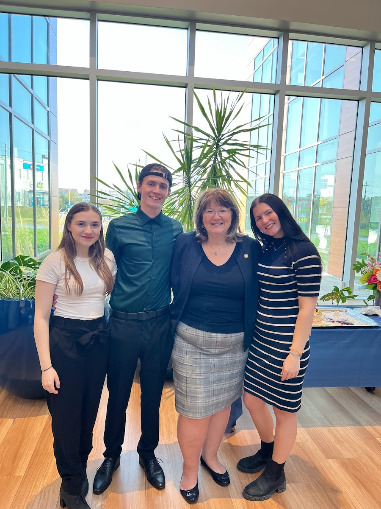

My Resume
Biography
Hello, my name is Jared Scott. Currently pursuing a degree in IT Computer Programming, I'm enthusiastic about acquiring new work experiences through both full-time and part-time positions. Adaptable and quick to grasp the essentials of any role, I thrive in dynamic, social environments while maintaining high work efficiency. Outside of work, I indulge in my passion for travel, support for local businesses, outdoor activities, and quality time with friends and family.
Volunteer Work/Extracurricular
- Bantam Baseball, Hammonds Plains (2015 - 2021)
- Charles P. Allen Frisbee Team, Bedford (2016 - 2018)
- The Haunted Hollow, Hammonds Plains (2015 - 2016)
- Blue Jays Care Foundation, Hammonds Plains (2018 - 2019)
Education
- IT Programming, Nova Scotia Community College, Dartmouth, NS (2023 - Present)
- Saint Mary's University, Halifax, NS (2019 - 2020)
- Charles P. Allen High School, Bedford, NS (2016 - 2018)
Work Experience
Event Construction/Event Security - Global Convention Services, Halifax, NS (2023 – Present)
Responsibilities include constructing conventions, setting up events, and transitioning to event security.
Inside Picker/Warehouse Associate - Kent Metro Warehouse, Lower Sackville, NS (2022 – 2023)
Assisted in packaging orders, using pallet jacks, and completing safety training.
Team Member/Front of House - Tim Hortons, Hammonds Plains, NS (2021 - 2022)
Gained experience in customer service and food safety.
Sales Associate - American Eagle Outfitters, Halifax, NS (2018 - 2020)
Developed skills in retail sales, POS transactions, and marketing promotions.

Skills
- Cash Handling
- Programming (C, Java, Kotlin, SQL, Spring Boot)
- Database Analysis
- Software Development
- Web Design
- AI Programming
- Retail Sales, Customer Service
- WHMIS Safety Training
- Fall Arrest Training
- Ability to Lift 100+ lbs
References
Contact me for references!